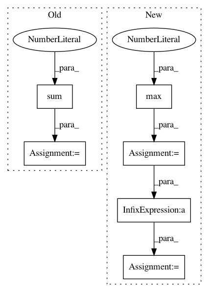

d1f4a9f474c547b099aa67619f7ba035a9f8ffbc,scripts/detection/ssd/train_ssd.py,,train,#Any#Any#Any#Any#Any#,95
Before Change
num_positive.append(nd.sum(box_masks >= 0).asscalar())
valid_cls = nd.sum(cls_targets >= 0, axis=0, exclude=True)
valid_cls = nd.maximum(valid_cls, nd.ones_like(valid_cls))
valid_box = nd.sum(box_masks > 0, axis=0, exclude=True)
l1 = cls_loss(cls_preds, cls_targets, (cls_targets >= 0).expand_dims(axis=-1))
// losses3.append(l1 * cls_targets.size / cls_targets.shape[0])
l1 = l1 / valid_cls * cls_targets.shape[-1]
After Change
box_labels.append(box_targets)
// losses1.append(l1)
// losses2.append(l2)
n_pos = max(1, sum(num_positive))
for l3, l4 in zip(losses3, losses4):
L = l3 / n_pos + l4 / n_pos
Ls.append(L)
losses1.append(l3 / n_pos)
losses2.append(l4 / n_pos)
autograd.backward(Ls)
In pattern: SUPERPATTERN
Frequency: 3
Non-data size: 6
Instances
Project Name: dmlc/gluon-cv
Commit Name: d1f4a9f474c547b099aa67619f7ba035a9f8ffbc
Time: 2018-04-07
Author: cheungchih@gmail.com
File Name: scripts/detection/ssd/train_ssd.py
Class Name:
Method Name: train
Project Name: dmlc/gluon-cv
Commit Name: 74475cddbe3defe8be72abd1d98940475809646d
Time: 2018-04-09
Author: cheungchih@gmail.com
File Name: scripts/detection/ssd/train_ssd.py
Class Name:
Method Name: train
Project Name: IBM/adversarial-robustness-toolbox
Commit Name: 9e49dce4a0b35b7daba7fa5d4ed529e36979a19a
Time: 2018-04-16
Author: Maria-Irina.Nicolae@ibm.com
File Name: src/classifiers/keras.py
Class Name: KerasClassifier
Method Name: predict